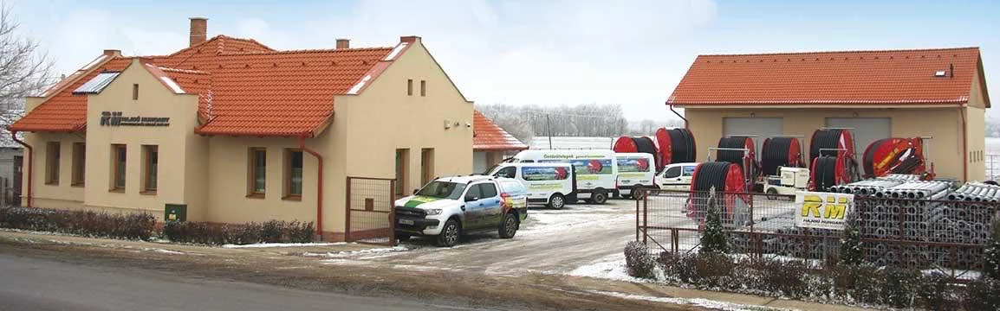
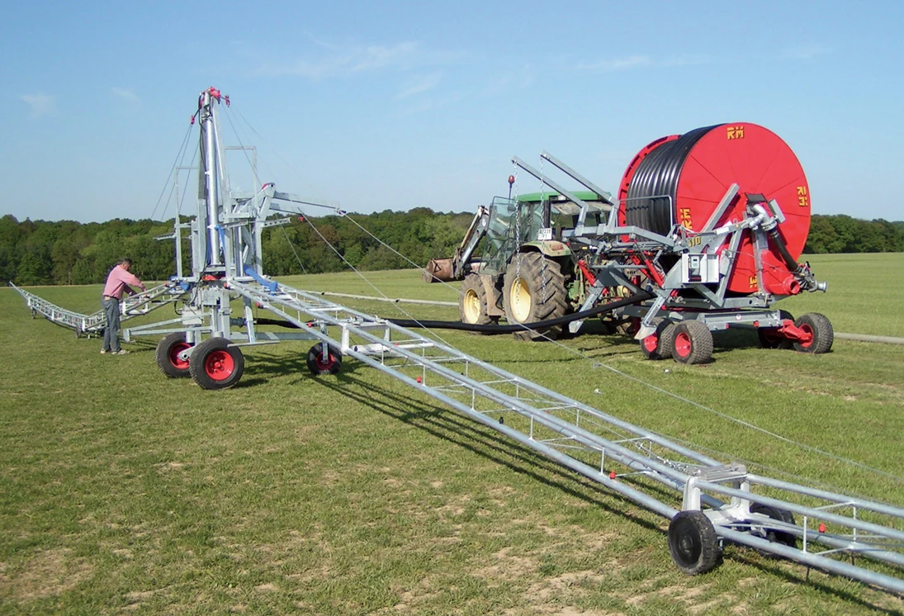

RM Hajdú Hungary
Forgalmazott termékeink
Öntözőgépek, dohánytermesztés gépei, talajművelő gépek

Telephelyünk · TépeA térkép automatikusan betöltődik, amikor a közelébe ér.
Rólunk
Az öntözéstechnikától a teljes gazdaságig
Cégünket 2003 évben Bartalis Bau Kft. néven alapítottuk. Ekkor fő profilunk az öntözéshez kapcsolódó műszaki tanácsadás, mérnöki munka volt. Az mezőgazdasági öntöző berendezések forgalmazásában a 2010 –es év átütő sikert hozott. Az előző évek üzleti kapcsolatának eredményeként megkaptuk az RM márkacsalád Magyarország területére vonatkozó kizárólagos forgalmazói jogkörét. Ekkor szükségesnek éreztük a cég fő tevékenységét jobban kifejező névváltozást. Az új név RM Hajdú Hungary Kft.
Cégünk öntözőtelepek tervezése, generál kivitelezése, öntöző berendezések forgalmazása mellett, párhuzamosan a dohánytermesztés gépeinek forgalmazását is felvállalta. Dinamikusan nő az alkatrész kereskedelem, és kiépítésre került a szervizhálózat is.
Az évek folyamán cégünk folyamatosan bővült, ezért elérkezetté vált a telephelyfejlesztés. Az Új Széchenyi Terv keretében pályázati forrás felhasználásával megépítettük, és 2014 év tavaszától használjuk a kor követelményeinek megfelelő irodaházat, és raktárépületet.
Termékpalettánk: RM csévélődobos, és konzolos öntözőrendszerek, Giunti csepegtető, és mikroöntöző rendszerek, horganyzott öntözőcsövek, Rovatti szivattyúk, Star Power áramfejlesztők, és szivattyús aggregátok, Vodar körforgó és lineár, De Cloet dohánypalántázók, dohány betakarítógépek, dohányszárítók.
Minthogy a klímaváltozás adott, a mezőgazdaság elképzelhetetlen öntözés nélkül. Mi ehhez megbízható, kiváló referenciákkal rendelkező, öntözőrendszereket kínálunk.
Termékkatalógus
Válasszon termékkategóriát
Először válasszon főkategóriát, majd alkategóriát a termékek megtekintéséhez.

Szerviz és alkatrészellátás
Szolgáltatásaink
- Eredeti cserealkatrészek beszerzése és alkatrész-utánpótlás
- Az általunk forgalmazott gépek és berendezések karbantartása, javítása és komplett felújítása
- Szivattyú- és öntözőtelepek tervezése, építése és kivitelezése
- Csőhálózatok telepítése
Keressen minket
Kapcsolat
RM Hajdú Hungary Kft.
4132 Tépe, Rákóczi u. 8.
Levelezési cím
4132 Tépe, Fő u. 8.
Telefon
+36 30/2780944
E-mail
rmhajduhungary@gmail.com